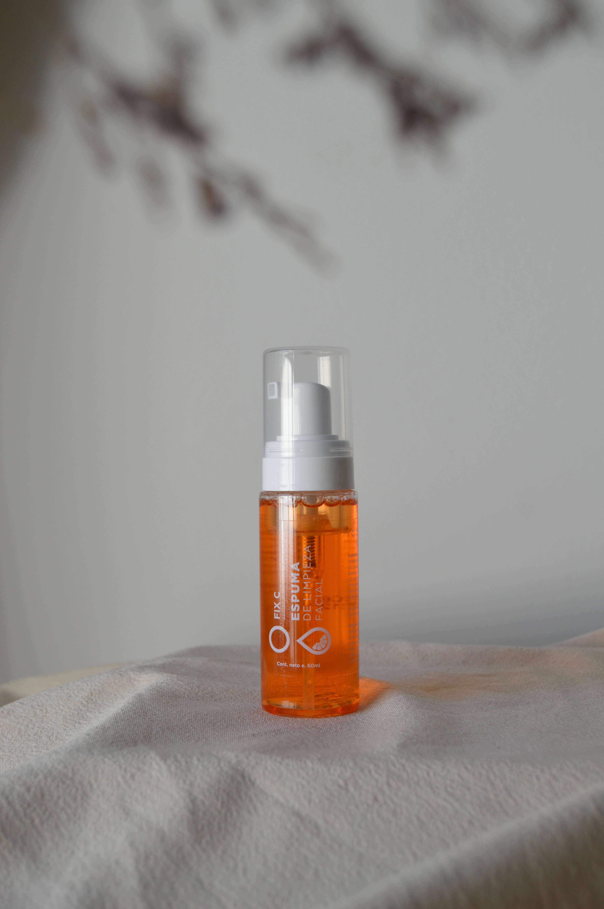
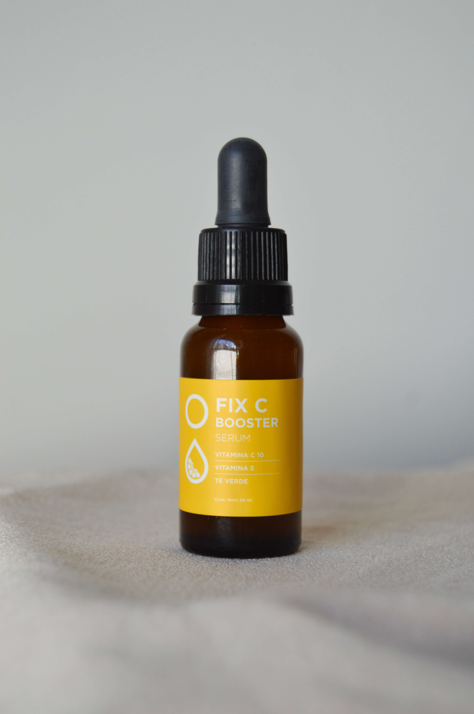
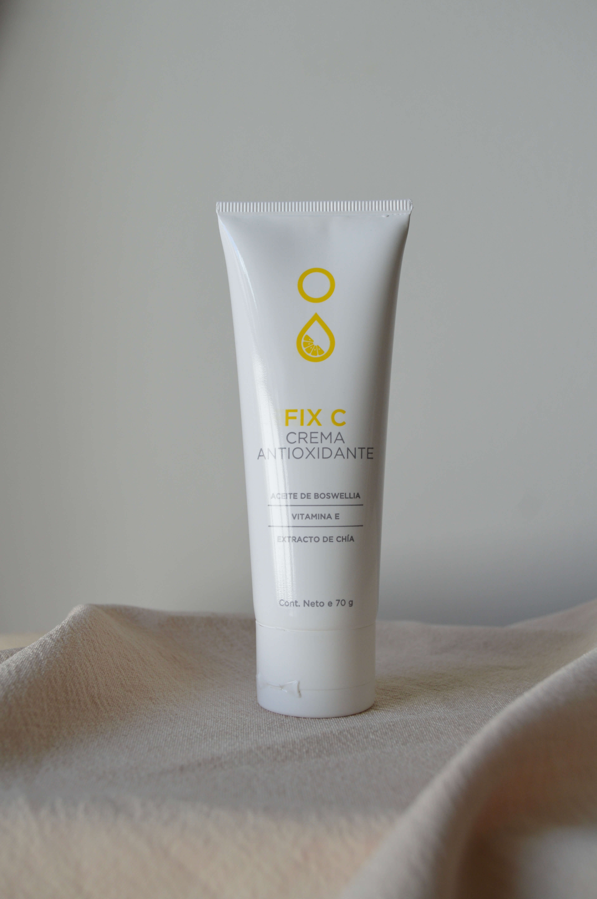
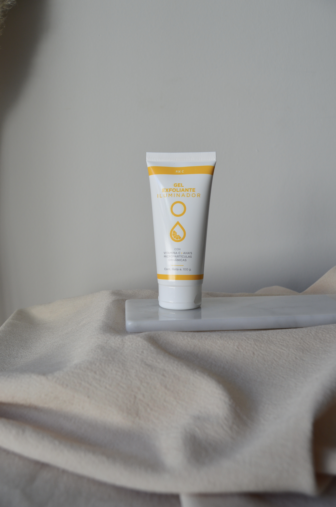
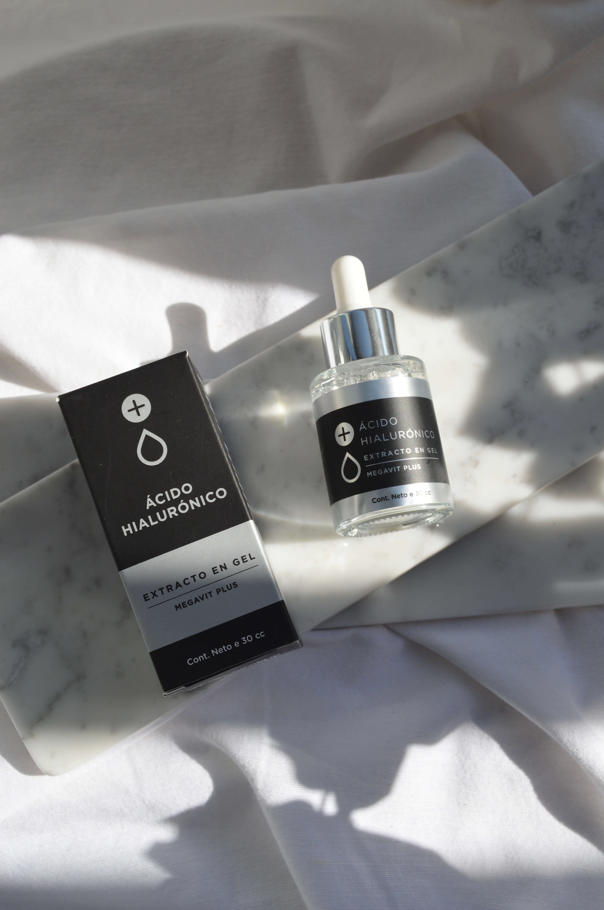
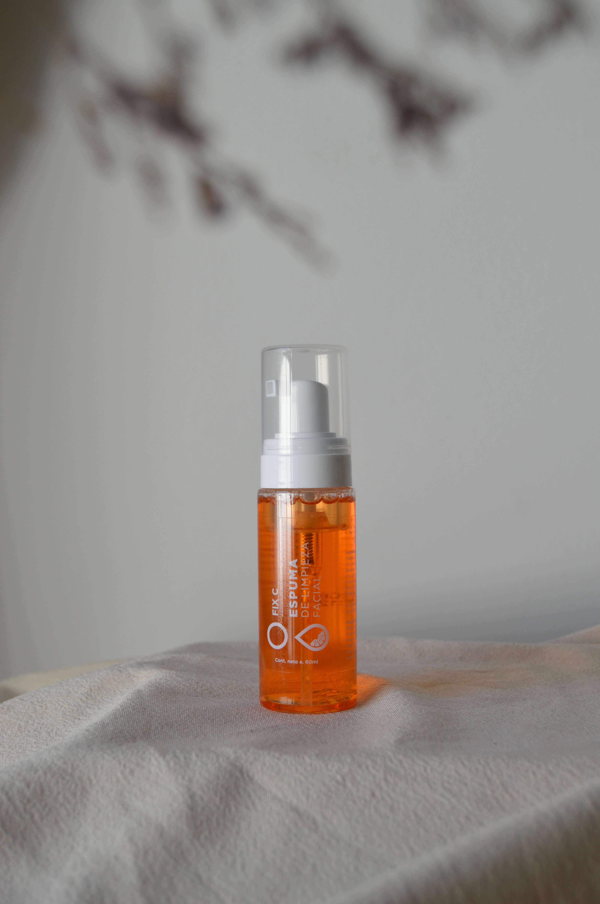
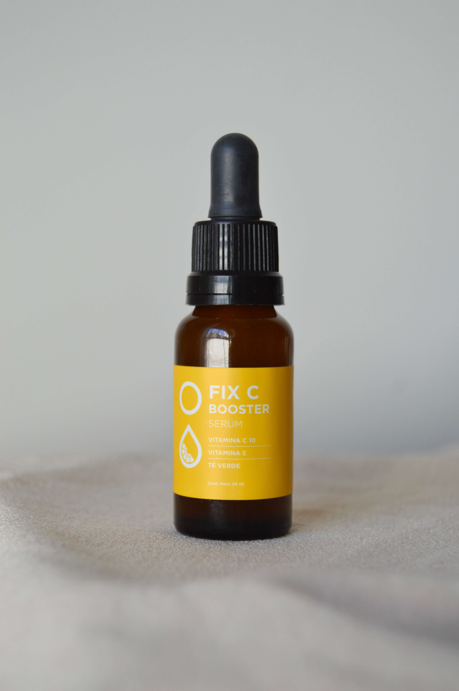
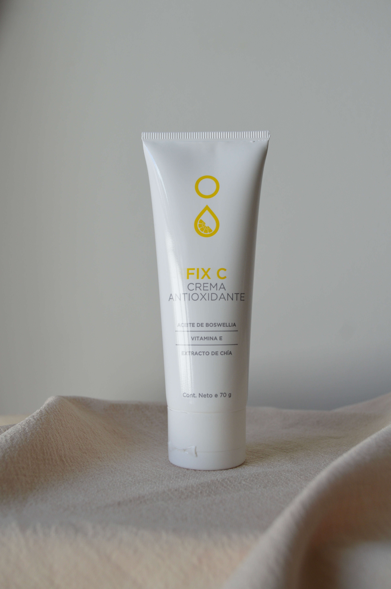
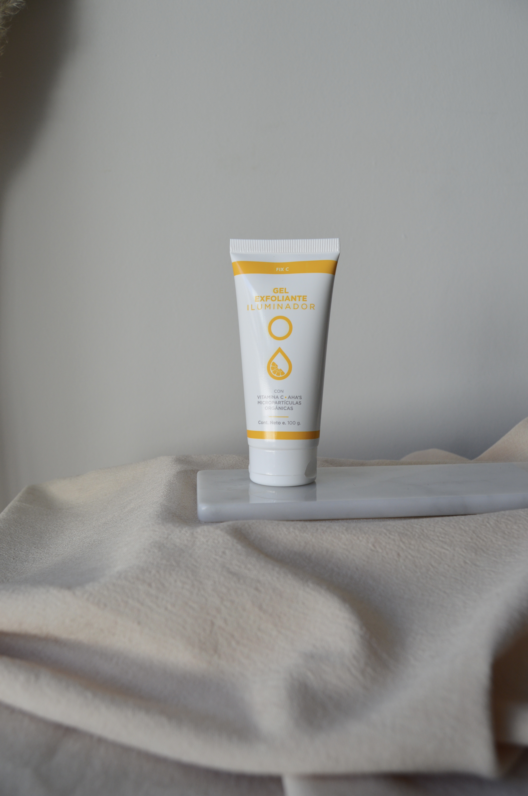
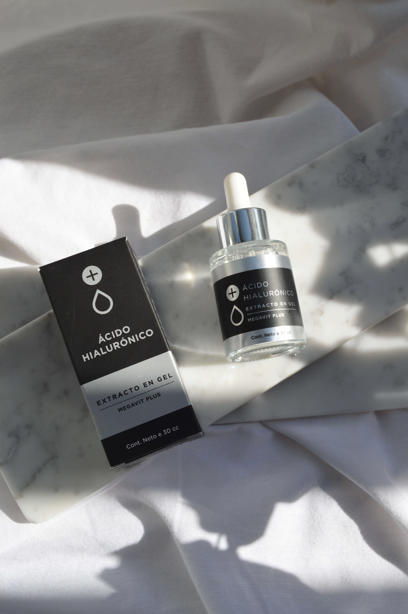

Cuidado Integral
En este espacio vas a encontrar los mejores productos para el cuidado facial y corporal. Todos los productos que vendemos, y que te recomendamos, están formulados por laboratorios especializados en el cuidado de la piel. Todos cuentan con aprobación ANMAT.
Nosotras
Somos Valentina y Antonia. Somos dermatocosmiatras. Somos de Zona Oeste PBA, estamos ubicadas en Gregorio de Laferrere. Hace mas de 5 años que nos dedicamos al cuidado y tratamiento de inesteticidades faciales y corporales.
Qué Hacemos?
Te enseñamos a conocer las necesidades de tu piel. Te enseñamos a reconocer cuáles son los requerimientos específicos de tu piel. Te indicamos cómo darte cuenta si sos biotipo seco, graso, mixto. Hacemos una evaluación integral y detallada de cada paciente, determinamos el estado y condición de la piel. Identificamos juntos cuál es el objetivo a tratar: manchitas, granitos, deshidratación, controlar grasitud, etc. a partir de ahí comienza la incorporación de los productos específicos, siempre teniendo en cuenta la necesidad particular y el objetivo del tratamiento. Te brindamos una amplia gama de opciones para que puedas elegir de acuerdo a tu gusto las texturas que vas a empezar a usar (crema, gel, serum, etc). Prestamos asesoramiento en forma presencial y/o virtual.
Los más pedidos
 








